This lesson continues our exploration of CARTO. We'll use CARTO to symbolize point-level data of US Greenhouse Gas emissions as Graduated Symbols and use SQL in more depth. We'll then explore possibilities for bringing in another data layer and adjusting the visibility of these layers as the user zooms in and out of the map.
Note: this dataset was downloaded from the EPA's Facility Level Information on GreenHouse Gasses (GHG) Tool (FLIGHT) and includes 2011-2015 Greenhouse Gas Emissions by facility from coal fuel.
Here is an example of a map you might produce with this lesson
Let's first load a new dataset into our CARTO account. To begin, log in to CARTO and switch to view our datasets (e.g., https://nmp.CARTO.com/u/username/datasets).
Click on the New Dataset button, and select the emissions_2014.csv file that accompanies this module. Leave the option to let CARTO "automatically guess data types and content on import" checked. Click CONNECT DATASET.
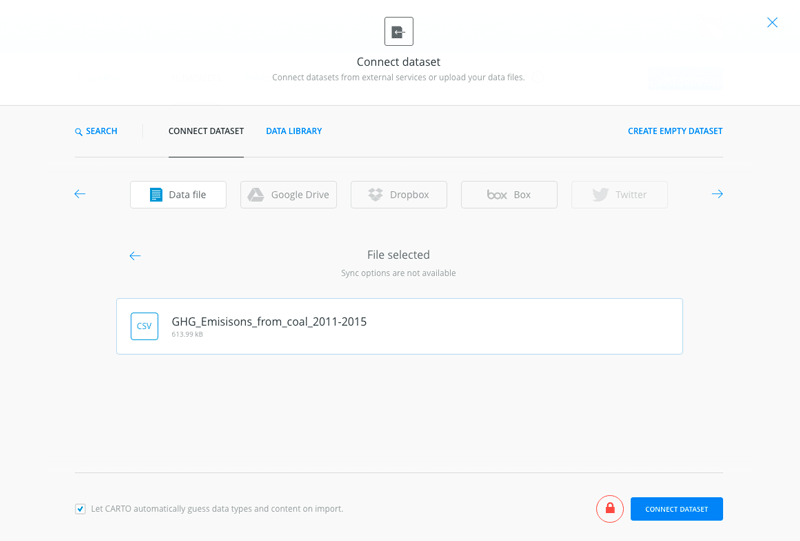
Figure 01: Selecting the local data file and connecting the database to CARTO
Once the dataset is connected, CARTO will open the file in the Table View. Take a moment to complete the metadata information.
Note that the the_geom column is populated with geometry values drawn from the latitude and longitude fields contained within the CSV file. CARTO automatically detected these values and georeferenced the data. How convenient!
Take a moment to scan through the rest of the field attributes. Note the one titled "ghg_quantity_metric_tons_co2e." This is a quantitive measure of the amount of reported greenhouse gasses emissions from coal fuel across the US between 2011 - 2015. It is a raw number (i.e., not a standardized rate) of a point location. The desired method for cartographically representing such data is a graduated or proportional symbol map.
First, we need to clean up and summarize our data. Switch over to the SQL tray in your Table View. Let's run some SQL commands to inspect our data.
Find the toggle switch with the help of this screen capture:
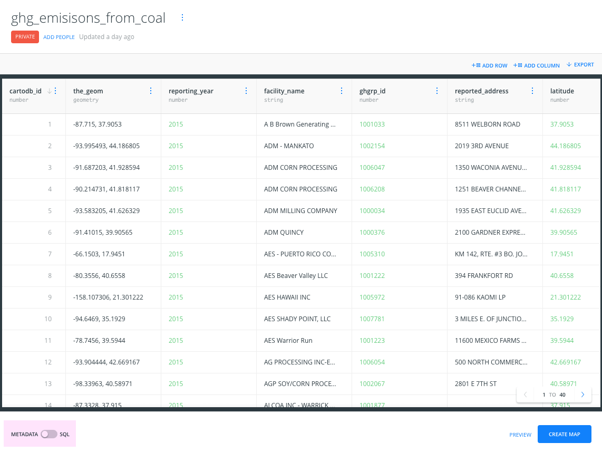
Figure 02: Table view and switching on the SQL tray
Let's take a look at the default SELECT statement in the SQL tray:
SELECT * FROM boyd.ghg_emisisons_from_coal
This statement selects all fields from the table called "ghg_emisisons_from_coal" in my account. We could easily filter out fields if we wanted to minimize the amount of data we had to manage down the design workflow. The only required fields are the "cartodb_id" (which provides interactivity such as popups) and "the_geom" (the spatial information for our features). Let's construct a statement that selects all records with the fields, "cartodb_id, the_geom, facility_name"
SELECT
the_geom,
cartodb_id,
facility_name
FROM
boyd.ghg_emisisons_from_coal
SQL statements are case insensitive and can be formatted with line breaks and tabs for easier reading. The fields after the select should have commas separating them, except for the last field. Hit APPLY and notice that you should have three fields.
OK, let's inspect our data in more detail. Let's isolate only those facilities in your city or state. Run the following statement:
SELECT * FROM
boyd.ghg_emisisons_from_coal
WHERE
city_name = 'LEXINGTON'
The WHERE clause filters records based on an expression. In this case we want only facilities in the city of Lexington. If we had two cities named "Lexington," we would add the AND operator:
SELECT * FROM
boyd.ghg_emisisons_from_coal
WHERE
city_name = 'LEXINGTON'
AND
state = 'KY'
Since the fields "city_name" and "state" are a string datatype, we enclosed the value in single quotes. Note that string values are case sensitive. If your SQL statement was successful, you should have five years of data for the same facility. If we mapped this table now, many facilities would have five points.
Below is a screen capture of the above SQL statement:
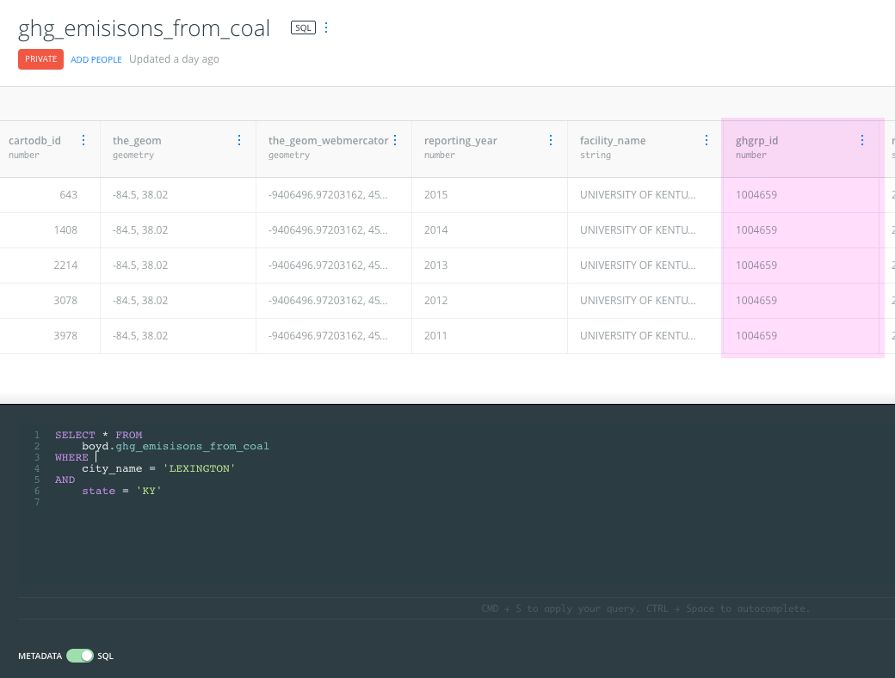
Figure 03: Five records for the same facility as designated by the "ghgrp_id" field
If we wanted to map facilities by year, we just need to alter our WHERE clause to filter by year:
SELECT * FROM
boyd.ghg_emisisons_from_coal
WHERE
reporting_year = 2015
ORDER BY
ghg_quantity_metric_tons_co2e DESC
The ORDER BY keyword sorts our table by greatest GHG emitters in descending order. The options for this keyword are ascending or descending order, e.g., ORDER BY field_name ASC | DESC. This statement helps us understand our data, but it also determines the order that symbols are drawn on the map. The first record is drawn first. If we created proportional circle symbols showing the amount of GHG, the largest emitters would not obscure the smaller emitters. OK, so we've got some familiarity with SQL. Let's use some of the SQL functions available in CARTO.
What if we wanted to show emission amounts over the five years reported in the table? The math is simple; we would add up the the field "ghg_quantity_metric_tons_co2e" for each unique facility as shown in the "ghgrp_id" field. Let's see how this is done with SQL:
/** sum metric tons by unique id **/
SELECT
SUM(ghg_quantity_metric_tons_co2e) as total_ghg,
ghgrp_id
FROM
boyd.ghg_emisisons_from_coal
GROUP BY
ghgrp_id
ORDER BY
total_ghg DESC
The SUM(numeric_field) function works with the GROUP BY keyword to add up total emissions over the five-year reporting period for each unique facility as shown in the "ghgrp_id" field. Other aggregating statistical functions are MAX(numeric_field), MIN(numeric_field), AVG(numeric_field), etc.
The AS keyword is field alias and creates a new field name in the output table. This is a screen capture of a successfully applied statement:
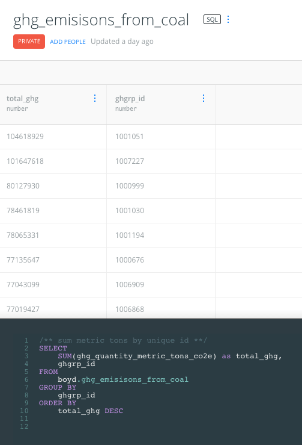
Figure 04: Successful statement to add up emission amounts per unique ID
Let's create a new dataset from this statement using the Create Dataset from query. We'll create a new table with these two fields. Since we have the "ghgrp_id," we can do attribute join back to the point layer for quantitative mapping. Find the command with the help of this screen capture:
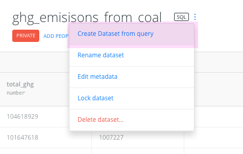
Figure 05: Create new dataset from query
Before we can do an attribute join to symbolize our new dataset, we'll need to extract the unique "ghgrp_id" records from our table. We can use the DISTINCT ON statement to extract unique records by a field value, i.e., "ghgrb_id". Since we have five years of reports for each facility (newer facilities might have fewer records), we need just one record from each facility. Let's take a look at the statement to understand what is happening:
SELECT distinct on (ghgrp_id)
ghgrp_id,
facility_name,
parent_companies,
reported_address,
city_name,
state,
the_geom
FROM
boyd.ghg_emisisons_from_coal
The first line SELECT distinct on (ghgrp_id) will select the first unique record for each instance of "ghgrb_id." The statement then adds the fields we've specified in the next few lines. Make sure to include "the_geom" since it contains the point location of our emitters. After you APPLY the statement, sort your table to make sure you don't have duplicates. When you are satisfied that you have a good table Create Dataset from query like we did in the previous step. Make sure you give it a unique name and metadata. You should have a screen that looks similar to the below capture:
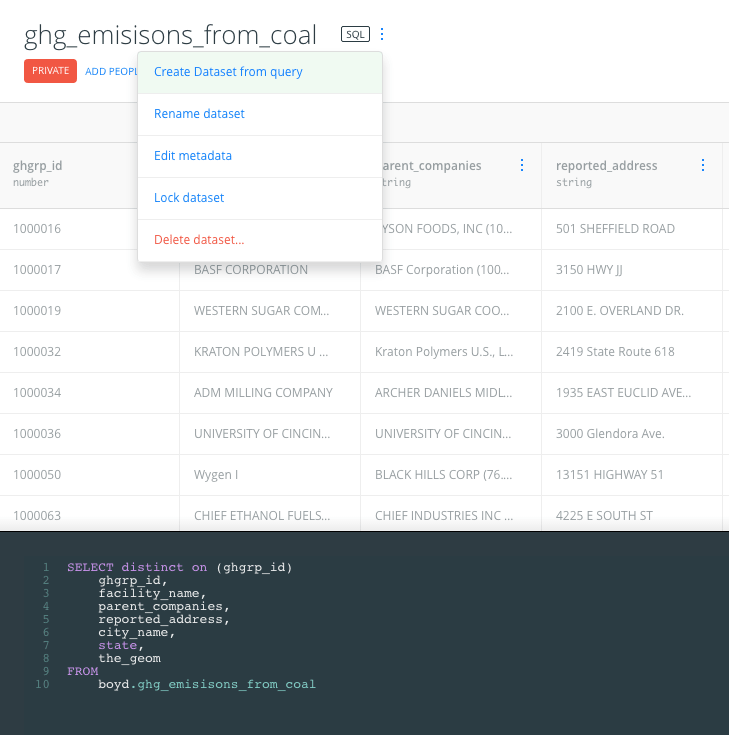
Figure 06: Create new dataset from DISTINCT ON statement
Before we begin our table join, let's make sure we have the correct layers. We should have the layer that adds up the metric tons of GHG per unique "ghgrb_id," which has two fields and no geometry. A second table should be essentially a list of different emitters, with location geometry.
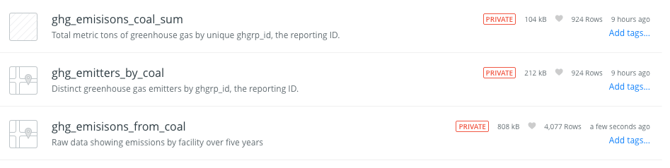
Figure 07: Tables we created from the original dataset
To start an attribute join in CARTO, we need to CREATE MAP from a layer. Let's use the layer we created from the SELECT DISTINCT ON statement, which has "the_geom" field. After we're in Map View we should ADD ANALYSIS for our layer as shown in this screen capture:
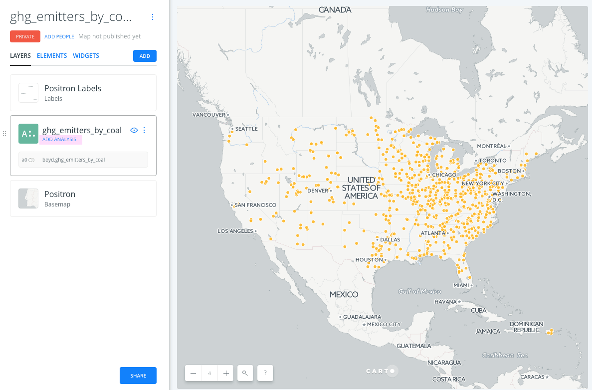
Figure 08: Add Analysis to a layer in Map View
You will then be presented with a list of analysis functions that can be performed on our data. Most of the functions can be accomplished in SQL, but we'll save that for another lesson. Let's select the Join columns for a 2nd layer as shown below:
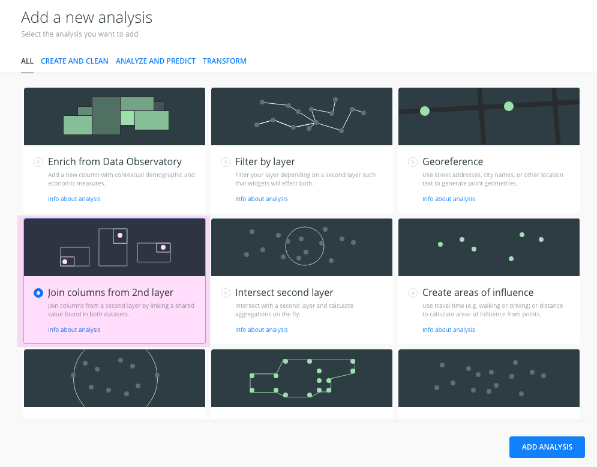
Figure 09: Join columns from 2nd layer
The next steps will take more attention to detail.
A screen capture can't show all of the settings you'll need to apply, but it should look to this:
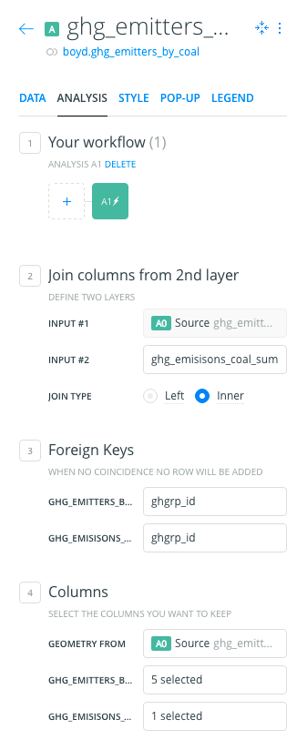
Figure 10: Join columns from 2nd layer settings in map view
Hit APPLY and CARTO will ask if you want to start styling your map. Of course! This is a new feature in Builder and what's nice about the Analysis functions is that they're editable, on-the-fly calculations. If you want to make a layer permanent, you'll need to Export dataset in the Layer options dialogue found to the next the layer's name.
OK, ready to STYLE? Change the FILL method to BY VALUE option and find the field that contains your total GHG emissions per facility between 2011-2015. It should have the prefix "right_" indicating that it was the join table. You should see something similar to the below screen capture:
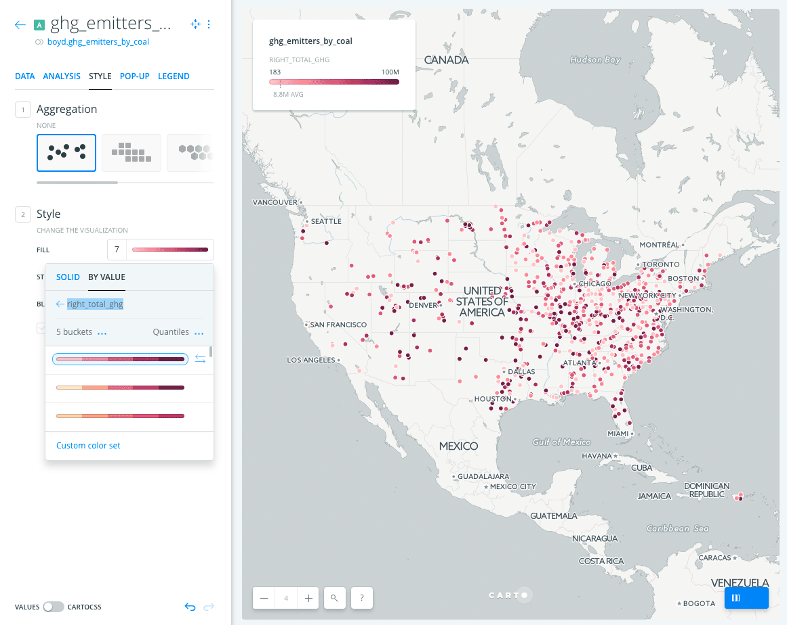
Figure 11: Defaults to a graduated color, not a graduated size of marker
One of CARTO's most exciting features is the built-in aggregation function. Notice the slider in "Step 1 Aggregation" allows us to symbolize our data with a few different geography types. We can use standardize units (squares or hexbins) or units of administrative geographies, i.e., countries or states. Some important considerations and distinctions should be recognized before we use this approach. Most importantly, our POP-UP interactivity is not available with this aggregation methods. We also need to understand what the legend is doing in these various methods.
Let's take a look at the square and hexbin aggregation methods. Make the following settings for your layer:
You should produce a similar image to the screen capture:
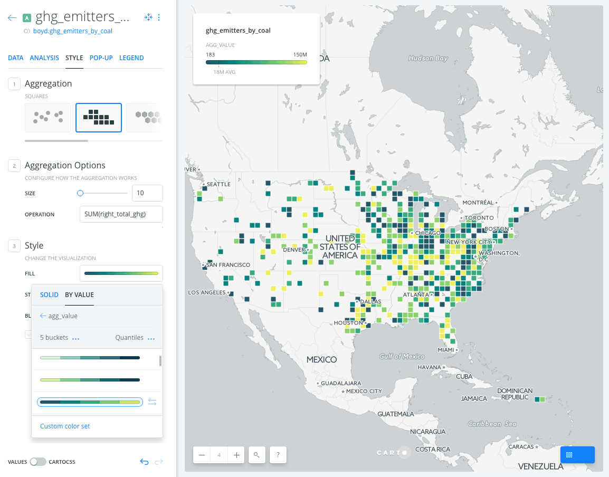
Figure 12: Aggregation by squares method show total metric tons by arbitrary square sizes
Notice that the legend has calculated a choropleth map dynamically from our joined table. Pretty cool. The hexbin aggregation method produces a similar map.
Perhaps the most useful aggregation method is by administrative unit. We can choose between "countries" or "provinces", but the legend will normalize the values based on the area of admin feature. Make the following settings for your layer:
You should produce a similar image to the screen capture:
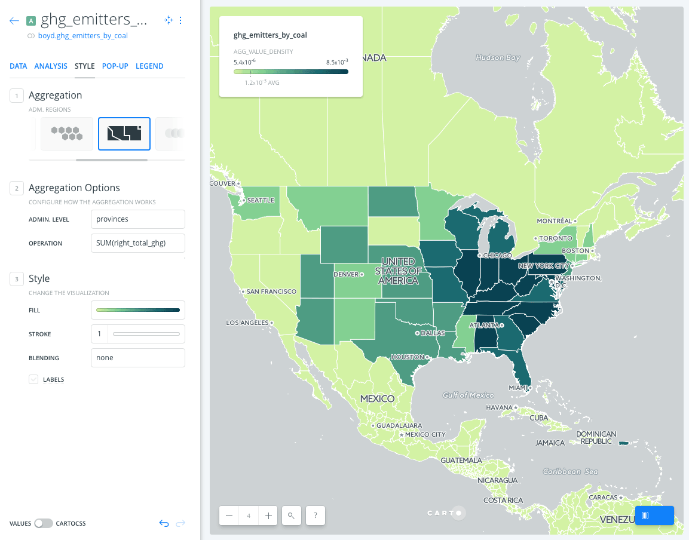
Figure 13: Aggregation by provinces show total metric tons per square meter
Besides changing the enumeration unit, this aggregation method dynamically calculates the density of emissions. The most important consideration is understanding the units portrayed in the legend. The default linear unit in CARTO (and PostgreSQL and PostGIS) is the meter. This method is normalizing by the area in square meters of provinces, aka states.
Let's vary the size of the point by an attribute. When aggregated by area, we lose the POP-UP functionality. To maintain the interactivity so cherished in web maps, we need to keep points. Maybe Builder will add a menu interface to create this type of symbology in the future. For now, we'll need to edit the CartoCSS to get graduated symbol sizes.
Graduated and proportional symbols are a useful alternative to choropleth maps and are used to map either total or ratio data. They have some important advantages over choropleth maps (i.e., the data need not be standardized). We can use true point data to make a proportional symbol map (such as the location of coal plant AND its total emissions), or conceptual point data (i.e., a wind farm covers a large area but we can still represent it as a point). These maps are also good at showing relative magnitudes (i.e., "I can tell that this one is larger than that one").
We can make graduated or proportional symbol maps but we'll need to tinker in CartoCSS. Graduated symbol maps are simply proportional symbol maps that use a series of class breaks. Currently, CARTO creates graduated symbol maps with its CartoCSS ramp() function on the marker-width property.
Switch to the NONE for the Aggregation method and style the "FILL" with a solid color. Take the layer back to the default style as shown in this screen capture:
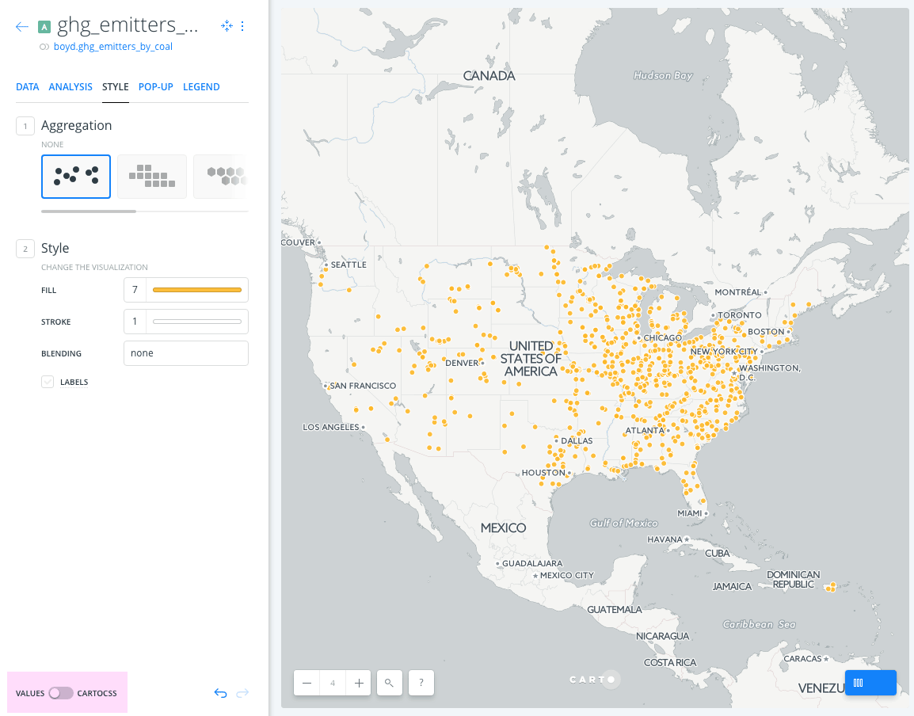
Figure 14: Default style with no aggregation or fill color by attribute value
Toggle over to the CartoCSS panel. You should see the following CartoCSS rules:
#layer {
marker-width: 7;
marker-fill: #FFB927;
marker-fill-opacity: 0.9;
marker-allow-overlap: true;
marker-line-width: 1;
marker-line-color: #FFF;
marker-line-opacity: 1;
}
The property marker-width property is set to a fixed size. We can vary the size of the marker by a numeric attribute if we employ the ramp() function. We saw this function in the last module, so let's fiddle with it some more.
Change the marker-width property to following expression: marker-width: ramp([right_total_ghg], 7,60 ); and hit APPLY. Lot's of circles! What's happening here?
The marker's width is varied between 7 pixels and 60 pixels proportionally based on the values in the field "right_total_ghg." You could use the classification methods like 'jenks', 'quantiles', or 'equal' interval methods, too. The 'jenks' and the other classification methods are enclosed in quotes because they string values. Only numeric values can be used without quotes.
Experiment with your CartoCSS rules, such as with color, opacity, and line width. Below is an example map with unique CartoCSS properties:
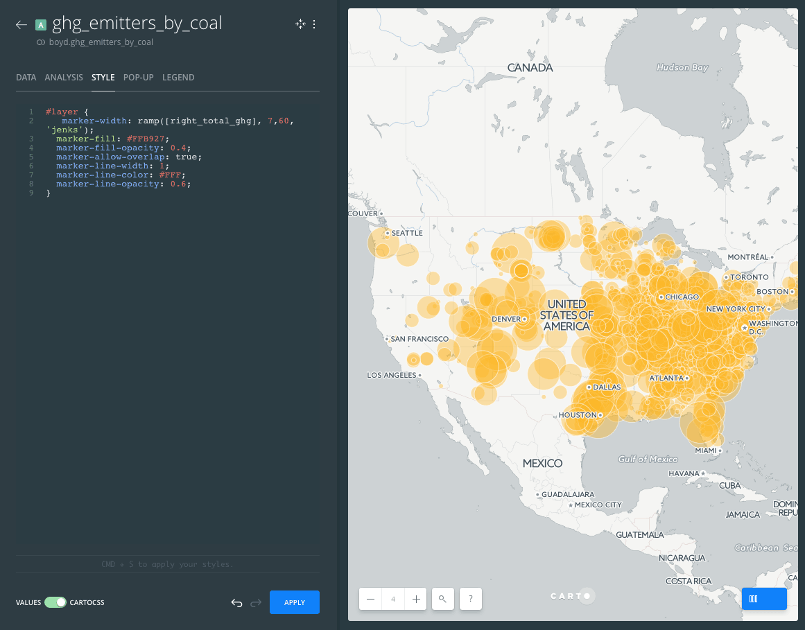
Figure 14: Example of graduated symbols using Jenks classification method
#layer {
marker-width: ramp([right_total_ghg], 7,60,'jenks');
marker-fill:#FFB927;
marker-fill-opacity: 0.4;
marker-allow-overlap: true;
marker-line-width: 1;
marker-line-color: #FFF;
marker-line-opacity: 1;
}
Unfortunately, dynamic legend generation doesn't work yet in Builder with custom CartoCSS rules. We can always add a custom legend via the LEGEND panel and give appropriate helpful text descriptions. Consider this legend for a graduated symbol map:
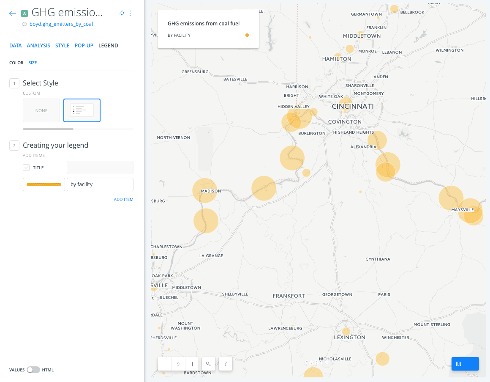
Figure 15: Example of custom legend for graduated symbols
Before we continue, let's Export data for this layer with the attribute join so we can reuse it on other CARTO maps. Much like in QGIS, the attribute join is an on-the-fly join that only exists within a map. To make it permanent we'll need to Export data as shown in the below screen capture. Unfortunately, we'll need to cycle through download/upload with this exported dataset to use in CARTO. Perhaps future iterations will allow saving the layer directly into a user's Datasets dashboard.
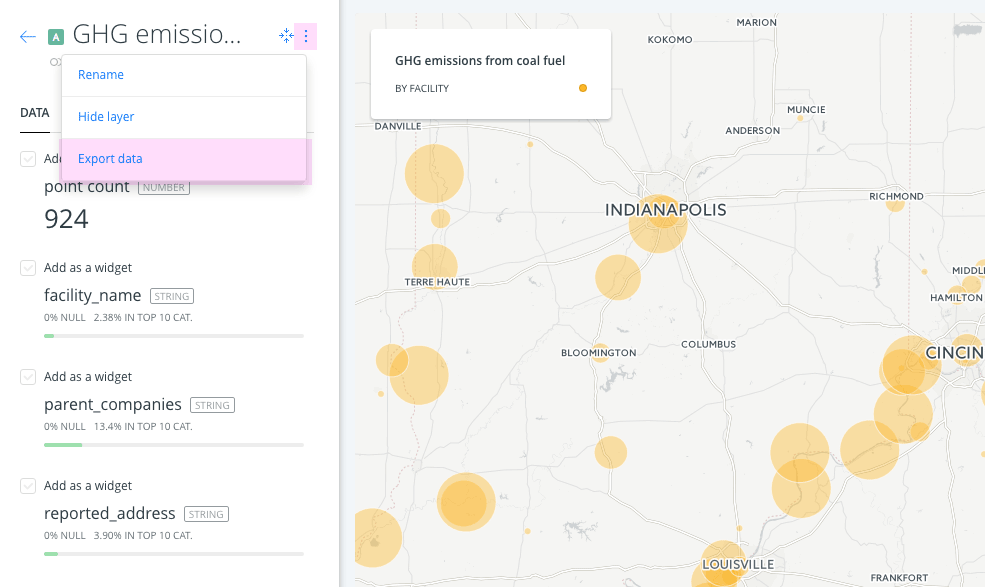
Figure 16: Export data to new dataset
Select GeoJSON as the preferred file format. Avoid using Shapefiles since this format will truncate column names.
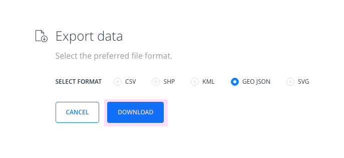
Figure 17: Export joined datasets to a new GeoJSON
Download the dataset and connect it back into CARTO. Before you upload the dataset, change the name of the GeoJSON file to a unique name, such as "GHG-emissions-by-coal-facility.geojson" The default name is the name of point layer we used in the table join analysis.
Keep this layer on hold for now. We'll use in the final map production section of the module.
While we can play with the visual design of the symbols (adjust their size and appearance), another potential solution within web maps we don't have in static maps lies in the ability to zoom into the map.
Notice that the sizes of the graduate point symbols re-adjust when zooming in and out of the map. Because of the density of the facility points, the map is fairly legible when zoomed in, but not so much when zoomed out.
Users can easily make visual comparisons between the facilities when zoomed into the map (say, zoom level 6 or greater). But what can we do when zoomed out (let's say zoom levels less than 6)? Notice that the zoom level is shown in the lower-left corner of the map. We can use zoom levels in CartoCSS as a condition. While we'll return to this option later in the module, try the following CartoCSS:
/* turn a layer on after a zoom level is reached */
#layer [zoom > 6 ] {
marker-width: ramp([right_total_ghg], 7,60);
marker-fill: #FFB927;
marker-fill-opacity: 0.4;
marker-allow-overlap: true;
marker-line-width: 1;
marker-line-color: #FFF;
marker-line-opacity: 0.6;
}
The remainder of this module will test a design solution. Our aim is to display the data using different visualization techniques at different zoom levels, i.e., points when zoomed and polygons when zoomed out. We've seen that we can aggregate point data by different areas and geographies, such as by hexbin or states. What if we wanted to aggregate by a different level of geography not found in the STYLE methods presented in CARTO? And, finally, can we switch between the different techniques on the same map?
Let's say we wanted to find the total greenhouse gasses emitted per county? While we could bring these point-level data down into QGIS and do a spatial join or point-in-polygon analysis using US states before pushing it back up to CARTO, we can also do this directly within the CARTO web interface. The ANALYSIS panel offers such a function, Intersect second layer which calculates aggregations dynamically.
First, let's get some US counties polygons. Again, let's go to the US Census Cartographic Boundary files and this time import the US counties at 1:500,000-scale (http://www2.census.gov/geo/tiger/GENZ2015/shp/cb_2015_us_county_500k.zip). Remember we can import these directly into CARTO without first downloading to our local machine (refer to the instructions in module 08).
Once the data is loaded, CREATE MAP and open the layer in MAP VIEW. For an extra challenge, do an Attribute Join using the 2010 population by county dataset we used in Lab 02.
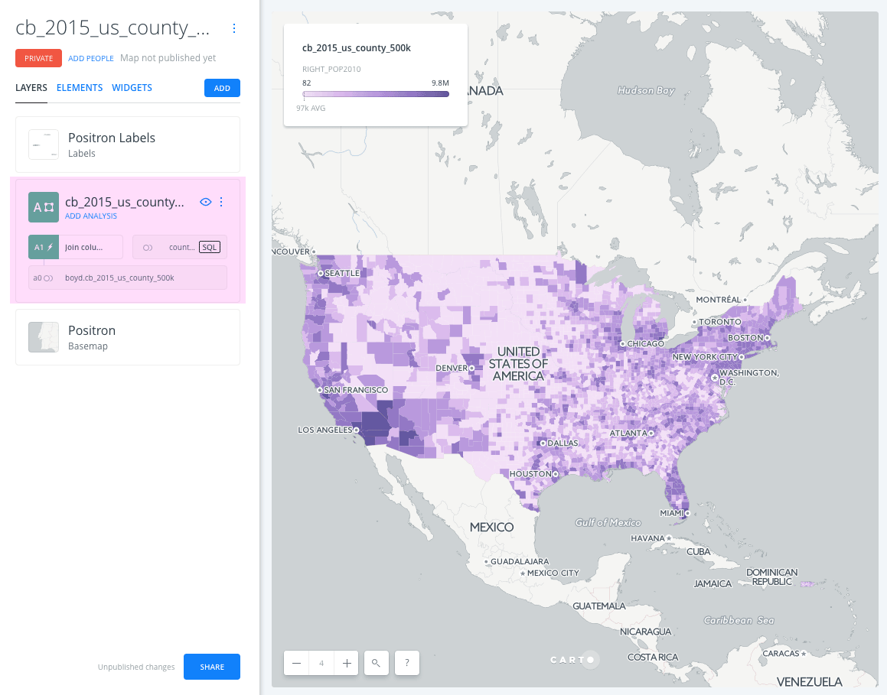
Figure 18: Adding county polygons with an attribute join of county population counts
You might remember that this type of choropleth map isn't the best way to present raw counts of data. We'll normalize our data after we commit the spatial join. Let's take a look at our attribute table before the spatial join. To normalize our data after the join we could use the column "aland" (land area in square meters) and if you committed an attribute join you could also use the columns "right_pop2010" and "right_sqmi". What we're looking to create is a column that shows the total amount of GHG emitted in each county from 2011 - 2015.
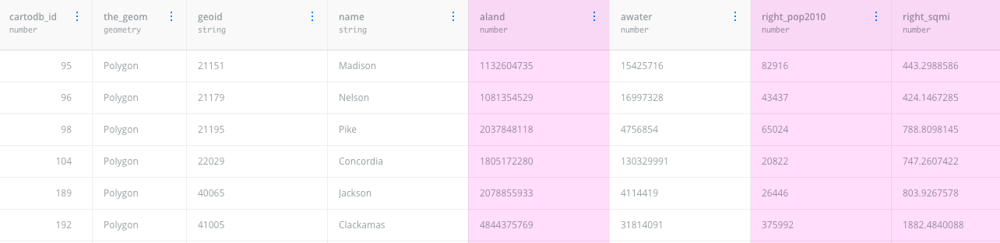
Figure 19: Field names in county polygons before spatial join that could be used to normalize our data
Begin in top Map View that shows your list of layers on the map. Click on the ADD ANALYSIS link as shown below:
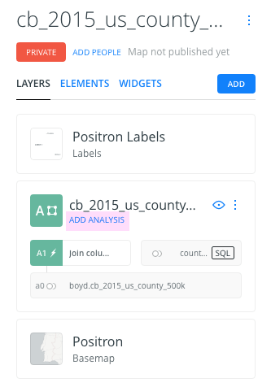
Figure 20: Start spatial join with polygon layer
Next, select Intersect second layer analysis function:
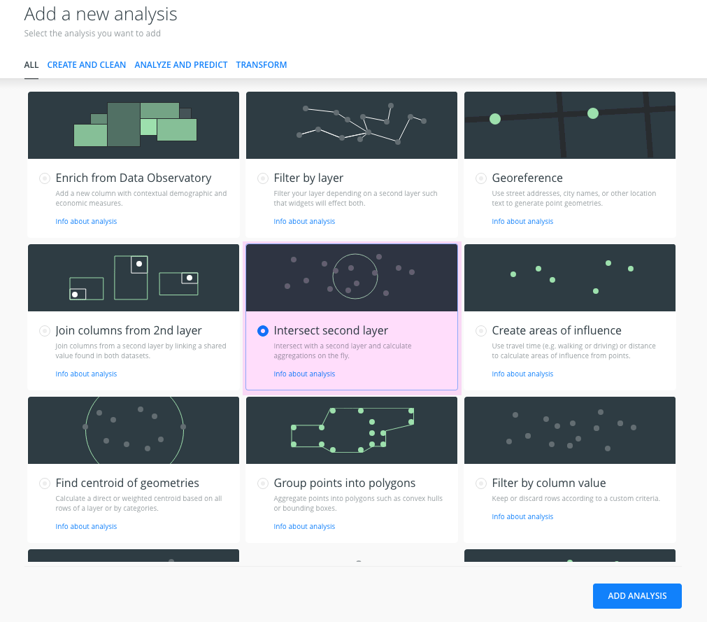
Figure 21: Intersect second layer analysis function
After your click on ADD ANALYSIS you will arrive at Your workflow for this layer with a chain of analyses. For this analysis, you need to choose the INTERSECT LAYER that contains your attribute for GHG emissions, ghg_emissions_from_coal or the layer with created with SQL earlier called ghg_emssions_coal_sum.
In the Measure by step, select the OPERATION that adds up our emissions, SUM(ghg_quantity_metric_tons_co2e) or SUM(total_ghg), depending on which layer you are intersecting. It doesn't matter which layer you choose since the intersect will arrive at the same solution. Your CARTO settings should look similar to the following:
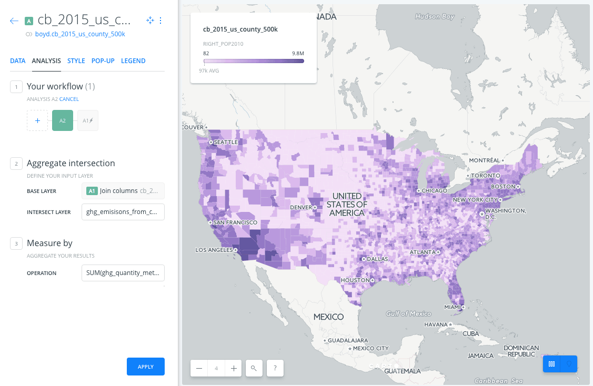
Figure 22: Intersect second layer analysis settings
Hit APPLY and if you have success, you should have the following message showing the column added to our map.
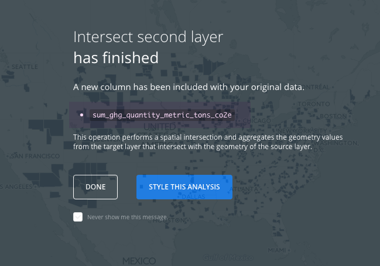
Figure 23: A successful intersect will show the added column name
Click on STYLE THIS ANALYSIS and change the polygon FILL method to BY VALUE and use the added column name. You'll immediately notice not all counties are included in the analysis. A "NULL" output (a county without emitters) is not included in the output geometry.
Most importantly, there's one problem with this map. Unfortunately, CARTO still allows us to do cartographically silly things, like create a choropleth map of un-normalized data. We have raw count of emissions by metric tons though we cannot normalize the quantity in the STYLE Panel. The new version of CARTO offers these remarkable on-the-fly analysis methods, which can be modified easily, but we cannot do the same type manipulations we've learned in QGIS.
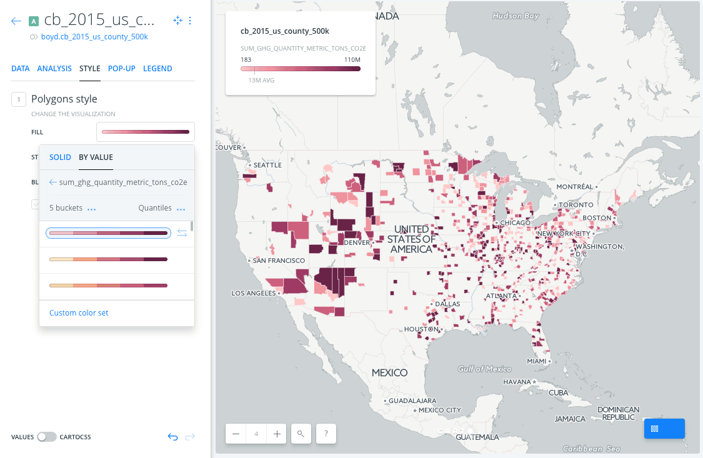
Figure 24: Raw count of emissions isn't normalized
To make this map more honest, we should divide those raw GHG totals by another number (in this case, the area of the land or population makes sense). We already know how to do this within QGIS using the field calculator, and that's certainly one option for us here. This would require:
There's nothing wrong with this workflow. But wouldn't it be nice if we could just do that quickly here in CARTO? That's where the usefulness of knowing a little SQL comes in.
Since this layer contains a workflow of analyses, we'll need to Export data the dataset to a new layer before we can use SQL. Unfortunately, we'll need to cycle through download/upload with this exported dataset to use in CARTO. Perhaps future iterations will allow saving the layer directly into a user's Datasets dashboard.
Find the layer's option button dropdown and select Export data as shown below:
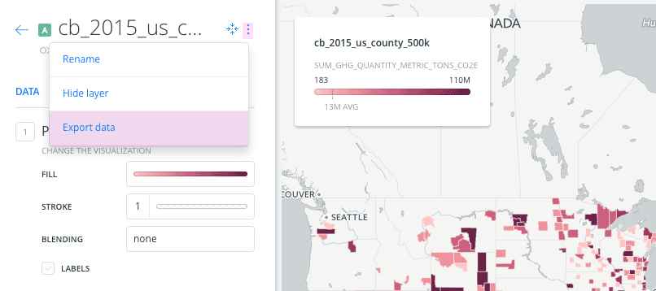
Figure 25: Export data to new dataset
Select GeoJSON as the preferred file format. Avoid using Shapefiles since this format will truncate column names. Download the dataset and connect it back into CARTO. Before you upload the dataset, you might consider changing the name of the GeoJSON file to a unique name, such as "ghg-emissions-by-county-and-population.geojson" The default name is the name of polygon layer we used in the intersect analysis.
After you connect the new dataset, open the attribute table, toggle on the SQL tray, and inspect the columns. You should see something like below:
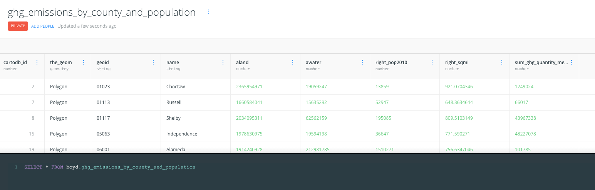
Figure 26: Emissions by county and population table
As we learned earlier in the lesson, we can use SQL to gain knowledge about our data. For example, which county had the most emissions? Use the following statement in the SQL tray:
SELECT
*
FROM
boyd.ghg_emissions_by_county_and_population
ORDER BY
sum_ghg_quantity_metric_tons_co2e DESC
Let's normalize our data by the size of the county and by population. First, we need to create two new fields. Hit CLEAR in your SQL tray to remove any custom statements. Then find the ADD COLUMN link in the table's upper-right corner:
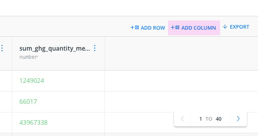
Figure 27: Add new column in Table View
Name the first new column something like "ghg_normalized_by_area" and change the type to be a number type. If you have joined population to the table, add a second field and call it "ghg_normalized_by_population" and change the type to be a number type.
OK, let's try some calculate some new fields. We're going to apply an SQL query to our dataset that's going to update the existing table and assign new values within our newly created "ghg_normalized_by_area" field. Divide our "sum_ghg_quantity_metric_tons_co2e" field by our "aland" field (this is essentially the same thing we're doing using the field calculator in QGIS). Here is the SQL statement:
UPDATE
boyd.ghg_emissions_by_county_and_population
SET
ghg_normalized_by_area = sum_ghg_quantity_metric_tons_co2e/aland
However, applying this query will not yield the result we are hoping to get. We can see the values in the "ghg_normalized_by_area" column are all zeros (not what we expected). The reason for this is that CARTO is using a PostgreSQL database to do this calculation, and when PostgreSQL divides two integers it chops off the remainder (not very helpful indeed!).
To correct this problem we need to convert one of these field values to a floating point data type upon the calculation. We do this by applying the ::float switch to our field value. This forces the calculation to a floating point output.
UPDATE
boyd.ghg_emissions_by_county_and_population
SET
ghg_normalized_by_area = sum_ghg_quantity_metric_tons_co2e::float/aland
Applying this query yields are anticipated results, but let's take a moment to reflect on these calculated data values. We're dividing tons of metric GHG emissions by the area of land (the cartographic boundary file encodes area in square meters within the "aland" field). A more meaningful measure would be to calculate the amount of GHG per square kilometer. To do this, we can easily divide the values of "aland" by 1,000,000 to get square kilometers.
We thereby update our SQL query to be (we write 1000000.0 and omit the ::float switch. Either will avoid the division by integers problem):
UPDATE
boyd.ghg_emissions_by_county_and_population
SET
ghg_normalized_by_area = sum_ghg_quantity_metric_tons_co2e/(aland/1000000.0)
OK, one last issue. If we created a POP-UP using the "ghg_normalized_by_area" field, we would have too many decimal places. Let's employ the round() function to round to one decimal place. The format for a properly constructed function is:
round(numeric value, integer giving number of decimal places)
Apply this statement in your SQL try:
UPDATE
boyd.ghg_emissions_by_county_and_population
SET
ghg_normalized_by_area = round((sum_ghg_quantity_metric_tons_co2e/(aland/1000000.0))::numeric,1)
We can do math inside functions and just remember to use parentheses to group your expressions. The ::numeric switch is used to signal to the round() function the expression will evaluate to a number. The last parameter is an integer giving number of decimal places.
Now our "ghg_normalized_by_area" field is populated with more meaningful numbers, and we can anticipate adding map and legend titles to the effect of "Metric tons of GHG per square kilometer."
If you have population by county, try to calculate the "ghg_normalized_by_population" field. It's the same procedure as above, just different fields. Remember to use the ::float switch to ensure you get fractional values as output.
Before you continue with the final stages of the module, order your table by "ghg_normalized_by_area"
SELECT
*
FROM
boyd.ghg_emissions_by_county_and_population
ORDER BY
ghg_normalized_by_area DESC
Your output table should look similar to the following screen capture:
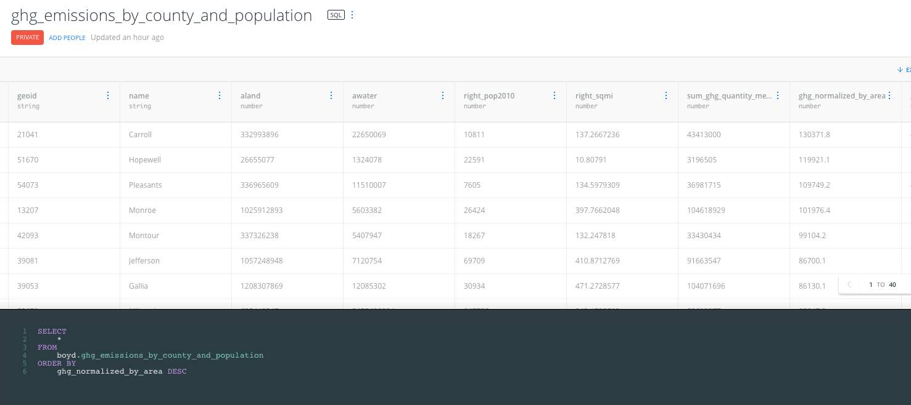
Figure 28: Emissions ordered by normalized data
Let's continue with making our web map of GHG emissions at different zoom levels.
Let's create a new map from this dataset. Click CREATE MAP in the lower right-hand corner. CARTO will switch to Map View where you can change your Basemap and add different layers.
Let's reflect on our options for our design solution. We want to show different visualizations of data at different scales. When we're zoomed out we want to aggregate our GHG emissions by US states. Zoom in a little and we can inspect our emissions by county. When we're zoomed in we want to see the individual facilities symbolized by the quantity of emissions. Of course, along the way we want to interrogate our data with useful POP-UPS.
So, we need the following layers on/off at varies zoom levels.
In Map View click the ADD button to add the distinct GHG emitters you created with SQL at the beginning of the module. Find the layer in the Add new layer dialog:
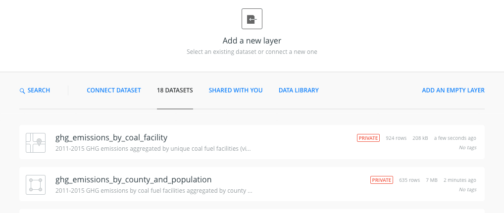
Figure 29: Add layer with one record per facility and five years of GHG emissions
Add this layer twice, since we're going to symbolize it in two different ways. Also, add some metadata to help manage your layers. Your map should look like the below screen capture:
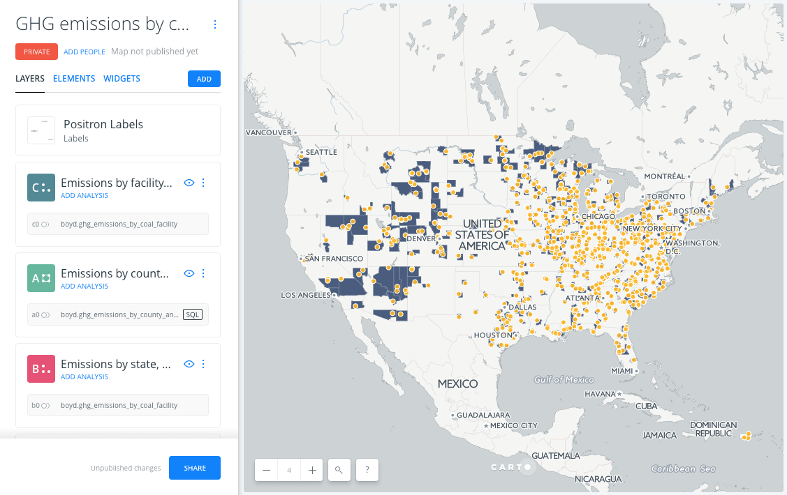
Figure 30: Three layers used for symbology in the "GHG emissions by coal fuel, 2011 - 2015" map
Let's start with the first layer, "Emissions by facility, 2011-2015" and make a graduated symbol based on "right_total_ghg" field. Click on the layer name, then access the STYLE panel and toggle on the CartoCSS tray. We've already created some CartoCSS rules for this layer in another map. Let's take a look at the rules:
#layer {
marker-width: ramp([right_total_ghg], 7,60,'jenks');
marker-fill:#FFB927;
marker-fill-opacity: 0.4;
marker-allow-overlap: true;
marker-line-width: 1;
marker-line-color: #FFF;
marker-line-opacity: 1;
}
Hit APPLY and you should see the following:
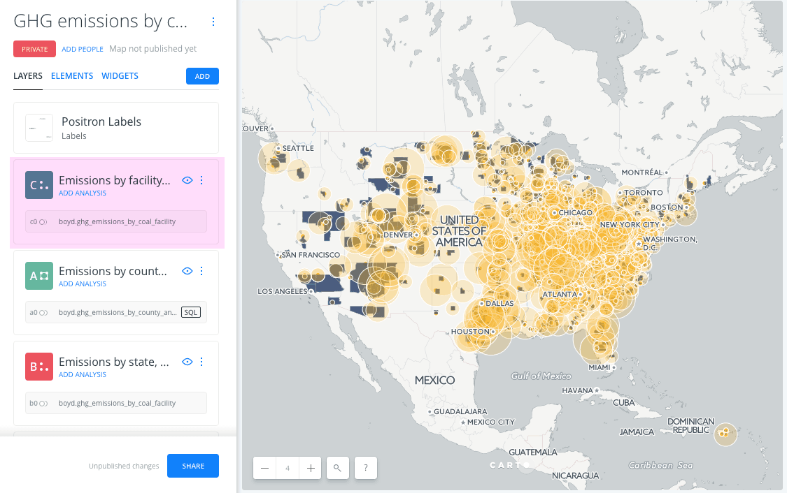
Figure 31: Point layer symbolized with graduated symbol
Next, click on the "Emissions by state, 2011-2015" layer to aggregate by state using the SUM("right_total_ghg") field operation in the STYLE panel. It is helpful to turn off the visibility of other layers to help style your map.
The LEGEND values are a little wonky at this point. The relative comparison is the most valuable use of this visualization method. We might change these values at the end to help with interpretation. Your setting should look like:
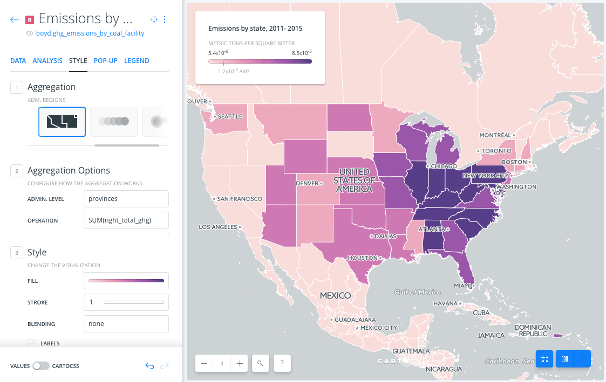
Figure 32: Emissions aggregated by state
Finally, let's symbolize "Emissions by county, 2011-2015" polygons using the FILL method BY VALUE using the "ghg_normalized_by_area" field. Style your map to look like the following:
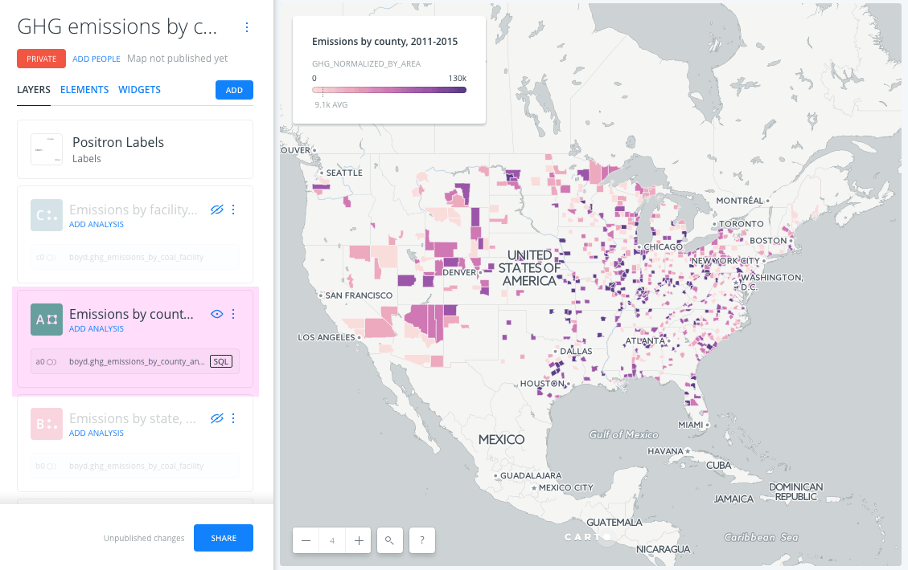
Figure 33: Emissions aggregated by county
Don't worry about LEGEND values. Just get the polygon layers in a similar color scheme. Now, apply our zoom levels.
For each layer's STYLE toggle to the CartoCSS tray and apply a [zoom ] condition as we outline before:
For the "Emissions by state, 2011-2015" CartoCSS rules:
/* Layer remains styled until zoom level 6 is reach */
#layer [zoom < 6] {
polygon-fill: ramp([agg_value_density], (#f9ddda, #eda8bd, #ce78b3, #9955a8, #573b88), quantiles);
line-width: 1;
line-color: #FFF;
line-opacity: 1;
}
For the Emissions by county, 2011-2015" the CartoCSS rules are a little more elaborate. Since the style cascades down the zoom levels, we need to change the properties after zoom level is reached:
/* Layer turn on after zoom level 6 is reach */
#layer [zoom >5] {
polygon-fill: ramp([ghg_normalized_by_area], (#f9ddda, #eda8bd, #ce78b3, #9955a8, #573b88), quantiles);
line-width: 0.5;
line-color: #FFF;
line-opacity: 0.5;
}
/* Layer changes after zoom level 9 is reached */
#layer [zoom >8] {
polygon-fill: ramp([ghg_normalized_by_area], (#f9ddda, #eda8bd, #ce78b3, #9955a8, #573b88), quantiles);
/*the polygon gets mostly transparent */
polygon-opacity: 0.2;
line-width: 0.5;
line-color: #FFF;
line-opacity: 0.2;
}
Finally, style the "Emissions by facility, 2011-2015" layer by adding a zoom level condition in its CartoCSS rules:
#layer [zoom > 8] {
marker-width: ramp([right_total_ghg], 7,60,'jenks');
marker-fill:#FFB927;
marker-fill-opacity: 0.6;
marker-allow-overlap: true;
marker-line-width: 1;
marker-line-color: #FFF;
marker-line-opacity: 1;
}
From here we have various options for improving the appearance of and experience using the map. We could add state outlines to make the map easier to read or change the basemap. We should address the LEGENDS as well as add some POP-UP functionality for the user to derive specific values from features, either from the facilities or the counties, or both.
For the LEGEND try to change labels to make them more generalized. Since we're adding interactivity, users can find exact values by clicking on a feature:
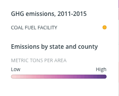
Figure 34: Example legend
When you're finished, click on SHARE and publish the map.
Additionally, we could consider reprojecting the map to an equal-area projection. However, the trade off doing that is that once we zoom past level 6 and lose the choropleth, a user may want the titled basemap in order to spatially locate and identify certain facilities. After we gain more advancing programming skills in MAP672 and MAP673 we could consider a script that would reproject the map at different zoom levels. But for now, we can ask ourselves if the trade-off is worth it. How important is it to conform to a cartographic principle (e.g., equal area projections for choropleth maps) at the expensive of allowing the user to locate specific facilities near their hometown?